세 종류의 사람, 그리고 현실의 네 칸
Dan Koe는 앞으로 10년 동안 사람들이 세 부류로 갈린다고 봐요. 첫째는 순수주의자(purist)예요. AI를 거부하고 자연이나 화면 없는 삶으로 물러나는 사람이에요. 그런데 정작 화면을 제일 많이 보는 경우가 많고, 진심인지 유행을 따르는 건지 구분이 안 된다고 꼬집어요.
둘째는 자동인형·사이보그(automaton, cyborg)예요. 결정을 전부 기술에 맡기고, 마찰이라면 질색하고 최적화에 중독된 사람이에요. 노션 템플릿과 '세컨드 브레인'에 빠졌던 사람들의 다음 단계라고 해요. 이들은 AI가 어디서 끝나고 삶이 어디서 시작하는지 몰라요.
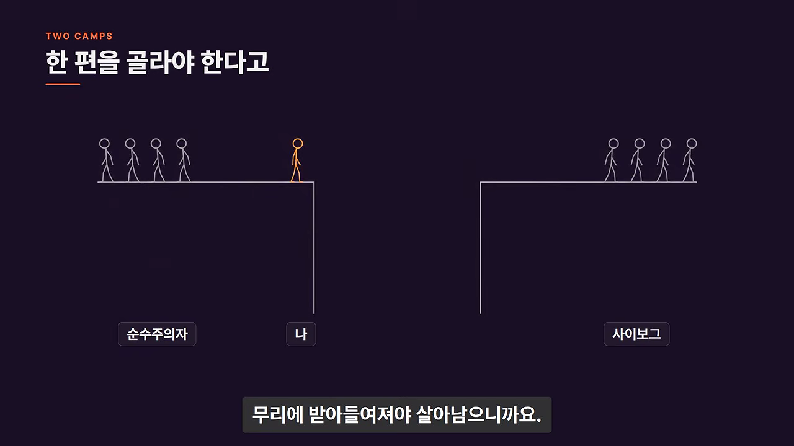
왜 둘 다 틀렸을까요
근거로 켄 윌버의 통합 이론에서 가져온 '현실의 네 칸'을 꺼내요. 왼쪽 위는 내 마음(생각, 감정, 믿음), 오른쪽 위는 내 몸(행동, 습관), 왼쪽 아래는 관계(문화, 가족, 의미), 오른쪽 아래는 사회(교육, 커리어, 경제)예요.
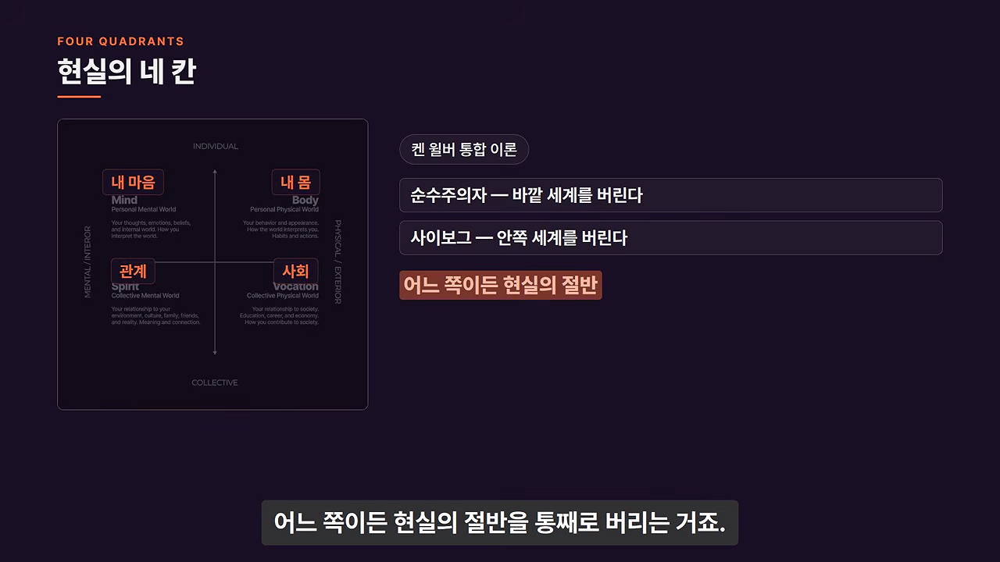
게임의 스킬 트리에 빗대기도 해요. 힘에만 포인트를 몰면 처음엔 강하지만, 능력치가 서로 이어져 있어서 어느 순간 막혀요. 돈만 좇다 번아웃이 오면 돈으로는 못 풀어요. 반대로 아무리 깨어 있어도 몸이 약하고 돈이 없으면 쓸데없이 고생해요.
직업은 250년짜리 발명품
세 번째 길은 다차원적인 사람, 곧 '디지털 르네상스인'이 되는 거예요. Dan Koe는 지금이 두 번째 르네상스라고 봐요.
Proof of work replaces the resume, an audience replaces the employer, and taste replaces credentials.
작업 증명이 이력서를, 오디언스가 고용주를, 취향이 자격증을 대신해요.
— 원래 영상 (이 영상 02:01 부근)
우리는 한 우물만 파라고 배웠어요. 디자이너든 작가든 엔지니어든 하나를 골라야 했고, 관심사가 많은 건 성격 결함처럼 여겨졌어요. 20년 전에는 그럴듯했지만, 지금은 그렇게 살면 언제든 대체될 수 있다는 느낌이 든다고 해요.
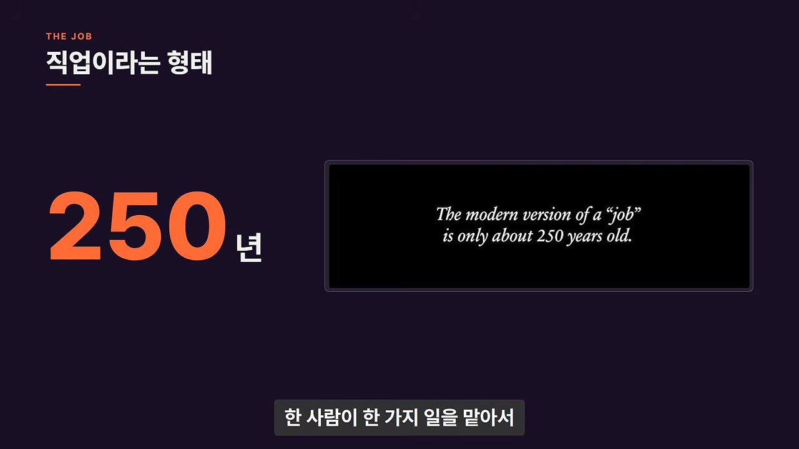
그전에는 평생 여러 일을 할 줄 알고 자기 비전을 좇는 자유인이 이상형이었어요. 한 가지 반복 작업만 하는 건 노예의 몫이었다고 말해요. 장인, 농부, 해적은 모두 일의 한 조각이 아니라 전체를 굴릴 줄 알았어요. 생각하는 사람이자 만드는 사람이었죠.
레오나르도 다빈치가 대표적인 예예요. 베로키오의 공방에 그림을 배우러 들어갔다가 해부학, 공학, 광학, 청동 주조까지 익히고 나왔어요. 아무도 그게 따로 학위를 따야 하는 분야라고 말해 주지 않았어요.
이 흐름을 바꾼 게 산업화의 공장 모델이에요. 교육은 '발견'에서 '훈련'으로 바뀌었고, 반복 작업과 직선형 커리어가 당연해졌어요. 그 결과 사람들은 사업 전체를 굴려 본 경험도, 스스로 판단하는 힘도 기르지 못했다고 봐요.
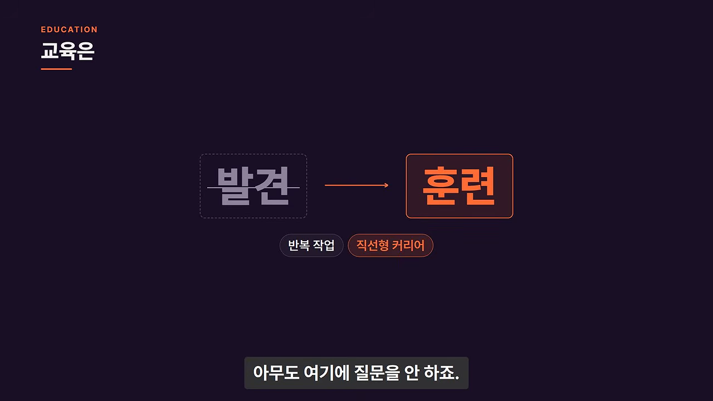
AI가 바꾼 일의 크기와 대비의 삶
이제 한 사람이 일에 따라 10~50명 팀이 하던 일을 할 수 있어요. 알려진 정보는 전부 손끝에 있어요. Dan Koe는 여기서 '알려진(known)'이라는 말을 강조해요.
Known information, not unknown or novel information that comes from experience.
AI가 잘하는 건 알려진 정보예요. 경험에서 나오는 미지의 새로운 정보가 아니에요.
— 원래 영상 (이 영상 04:31 부근)
미지의 길을 가며 새로운 걸 찾는 게 사람의 일이고, AI를 어디에 넣을지도 여기서 드러난다고 해요. 여기에 소셜 미디어라는 공짜 유통망까지 생겼어요. 미디어와 사람의 심리를 이해하면 혼자서도 미디어 회사가 될 수 있어요.
AI가 사람을 기계처럼 만든다는 걱정에는 이렇게 받아쳐요. 지난 200년 동안 사람들은 이미 기계처럼 살아 왔다는 거예요. 그러니 두 번째 르네상스에 올라탄 사람이 할 일은 세 가지예요. 자기 그릇(craft)을 고르고, AI를 지렛대 삼아 일 전체를 굴리고, 취향·방향·판단에 집중하는 거예요. AI 결과물에는 관점이 없어서, AI는 '형태를 잡아 줘야 하는 물주머니'라고 표현해요.
두 극단 사이를 오가는 사람
가장 흥미로운 사람은 '걸어 다니는 모순'이에요. 몸 좋은 지식인, 여유로운 억만장자, 영적인 전사 같은 사람이요. 이들은 순수한 창의성과 순수한 생산성이라는 두 극단 사이를 오가요.
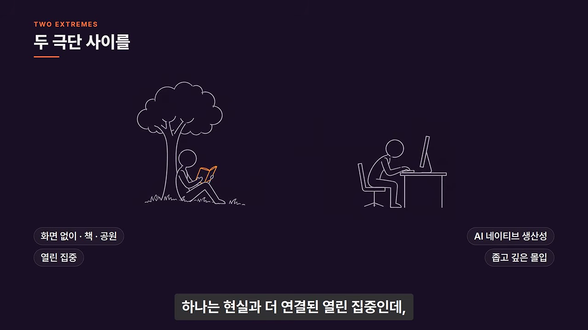
의미와 충족은 평평한 균형이 아니라 대비에서 온다고 해요. 늘 행복하면 그건 행복이 아니라 평범함이 되거든요. 그래서 더 큰 자극을 찾아 휴대폰을 못 놓는다고 봐요. 반대로 아끼는 일을 위해 실패하고 고생해 보면, 그 반대편에서 진짜 행복을 알게 돼요. 그래서 이기는 사람은 강하게 몰입하고, 깊게 쉬어요.
다윈의 하루
예로 찰스 다윈의 하루 일과를 들어요. 다윈은 평생 책을 19권 썼는데, 집중해서 일한 시간은 하루 3시간 남짓이었다고 해요.
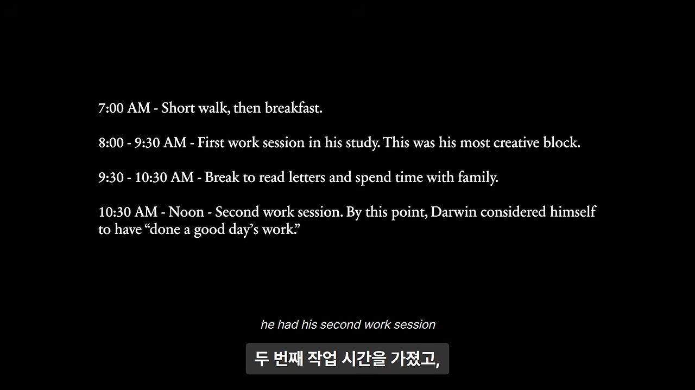
| 시간 | 한 일 |
|---|---|
| 오전 7시 | 짧은 산책, 아침 식사 |
| 8시~9시 30분 | 서재에서 첫 작업. 가장 창의적인 시간 |
| 9시 30분~10시 30분 | 편지 읽기, 가족과 시간 |
| 10시 30분~정오 | 두 번째 작업. 여기서 하루 일을 다 했다고 여김 |
| 정오 무렵 | 샌드워크를 도는 두 번째 산책 |
| 점심 뒤 | 신문 읽기, 아내가 읽어 주는 책 들으며 휴식 |
| 오후 4시 | 세 번째 산책. 때로 일행과 함께 |
Dan Koe도 산책으로 컴퓨터 앞의 강한 몰입과 열린 창의적 집중의 균형을 맞춘다고 해요. 이 길에 온전히 전념하면 무엇을 할 수 있을지 상상해 보라는 말로 이 구간을 맺어요.
한 그릇과 대체 불가능한 스킬 스택 3층
Dan Koe는 지금 가진 자원 덕에 우리 시대의 다윈과 다빈치, 소크라테스가 열 배는 나올 거라고 봐요. 다만 그걸 실감하는 건 한참 뒤일 거라고 해요. 이런 사람은 기술과 AI 에이전트를 곁에 두고 열 명에서 스무 명분의 산출을 내는 1인 비즈니스를 꾸려요.
옛 공방의 방식도 다시 돌아와요. 공장 이전에는 정해진 근무 시간이 아니라 일이 끝날 때까지 일했고, 도제에서 직인, 장인으로 커 가며 잘하는 사람을 따라 하다 자기 취향과 판단을 길렀어요.
다 하되, 한 그릇에 담아요
어떻게 디지털 르네상스인이 되느냐는 물음에 대한 답은 "다 하라"예요. 글쓰기, 디자인, 마케팅, 영상, 운동까지 호기심이 가는 건 다 해요. 다만 그 관심을 내가 알려지고 싶은 '한 그릇(one craft)'에 담아요.
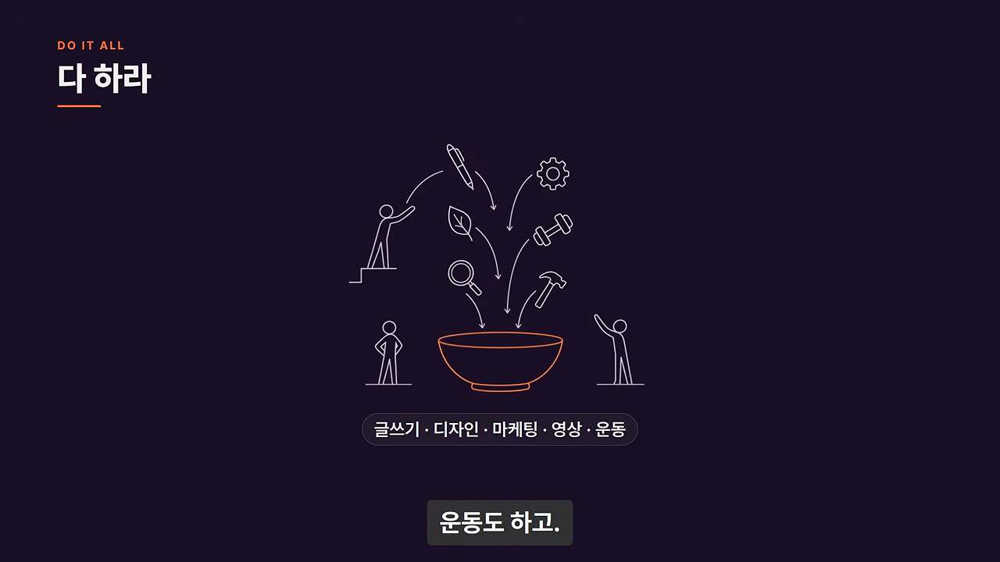
그릇을 고를 때 조심할 점도 있어요. 도구나 작업 방식과 자신을 동일시하는 거예요. AI에 반발하는 창작자 상당수가 그래서 반발한다고 봐요. AI 그림이 진짜 예술이냐는 논쟁은 올해 최대의 산만함이라고까지 말해요. 그 논쟁을 하는 동안 정작 자기 일을 하지 않으니까요.
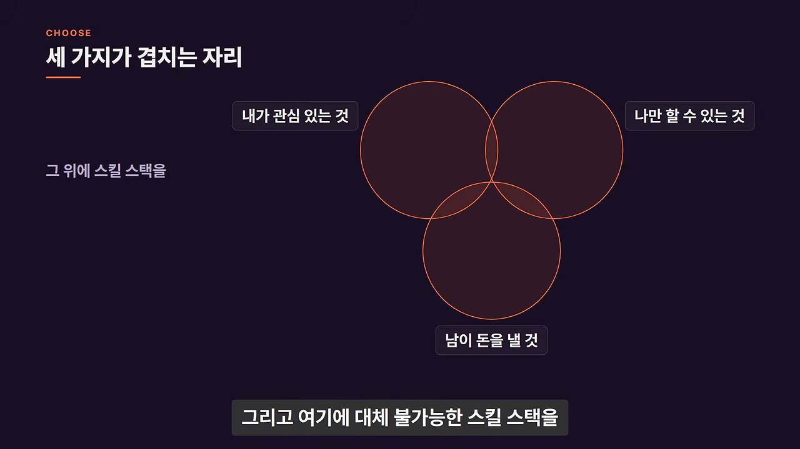
스킬 스택 3층
| 층 | 무엇 | 예시 | 세 원 중 어디 |
|---|---|---|---|
| 1층 | 사람의 본성과 심리 | 마케팅, 세일즈, 글쓰기, 말하기, 심리학 | 남이 돈을 낼 것 |
| 2층 | 나만의 분야에 대한 집착과 관심사 | 철학, 피트니스, 디자인, 코딩, 영양 | 내가 관심 있고 나만 할 수 있는 것 |
| 3층 | 도구 기술 | 이메일 마케팅 툴, 포토샵, 노코드 웹 디자인, 소셜 미디어 관리, 직접 코딩 | AI가 가장 먼저 대신하는 것 |
1층의 핵심은 사람의 관심이 어떻게 움직이는지, 사람들이 가치 있다고 보는 기준이 시간에 따라 어떻게 변하는지 이해하는 거예요. 모두가 죽은 인터넷과 AI 슬롭을 걱정하지만, AI 콘텐츠는 다 비슷해 보여서 사람들이 금방 질려요. 그걸 아는 사람은 머리를 써서 새로운 걸 만들어요. 마케팅과 콘텐츠, 제품, 사업은 끝없는 시행착오라서, 혼자 성공하고 싶다면 누구든 이 층은 익혀야 한다고 해요.
2층은 조합이 힘이에요. 몸 좋은 철학자는 직접 몸으로 이론을 시험해 보지 않는 안락의자 철학자보다 훨씬 가치 있고 흥미로워요. 여기에 마케팅과 세일즈까지 붙어서 제품과 사업이 있으면 막을 수 없다고 해요. 사람들이 다른 사람 말고 나를 찾아오는 이유가 이 층이에요.
3층은 원래 배우는 데 시간과 노력이 들어서 가장 중요했어요. 이제는 AI가 쉽게 해내요.
You should not bank your future on mastery of a tool because AI is the ultimate tool.
도구 숙련에 미래를 걸면 안 돼요. AI가 궁극의 도구니까요.
— 원래 영상 (이 영상 12:30 부근)
정체성이 포토샵 같은 도구 하나라면 몇 년 남았다고까지 말해요. 겁주려는 말 같지만 꽤 확실한 쪽에 건 거라고 덧붙여요. 기술이 바뀔 때마다 기계적인 부분은 자동화되고 사람의 역할은 한 층 위로 올라가요. 필경사는 편집자가 됐고, 손으로 천을 짜던 직공은 기계 운전자가 됐어요.
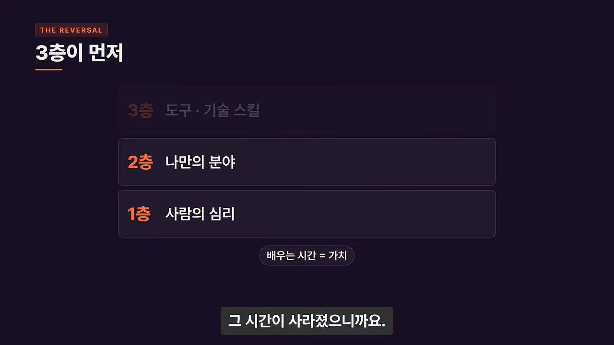
배우는 순서를 뒤집어요
학교는 사회에서 살아가는 법을 가르쳐요. 걷고 말하고 셈하는 데 필요한 조건화이긴 해요. 하지만 나만의 길을 찾는 법은 가르치지 않는다고 봐요.
진짜 교육은 스스로 세운 비전과 목표를 이루는 데 필요한 걸 배우는 과정이에요. 시험을 잘 보려고 지식을 쌓는 게 아니에요. 그런데 많은 사람이 스무 살에서 스물다섯 살 사이에 배우기를 멈추고, 같은 하루를 되풀이해요. 방법을 다 알아야 시작할 수 있다고 믿는데, 순서가 거꾸로라고 해요.
비전이 필터예요
배우는 법은 도제 모델이에요. 스승이나 멘토 밑에서 배우는 거예요. 요즘은 책 한 권, 유튜브 하나로 스승을 찾을 수 있어요. 피드가 붐비고 시끄럽지만, 그래서 비전과 목표가 필요해요. 목표가 머릿속 필터가 돼서 잡음을 거르고 신호를 보이게 해 줘요. 사업을 만드는 중이라면 유튜브를 열어도 자극적인 오락 영상보다 사업 영상을 일부러 찾게 돼요.
I don't care if you use AI to get information.
정보를 AI로 얻든 상관없어요.
— 원래 영상 (이 영상 14:23 부근)
중요한 건 비전과 목표를 세우고, 그쪽으로 가다 생기는 문제에 배운 걸 적용해 보는지예요. 그래야 배운 게 내 상황에서도 맞는지 검증할 수 있어요. AI도 할루시네이션으로 틀린 정보를 주지만, 사람도 틀린 말을 하고 그걸 끝까지 우겨요. 결국 비판적으로 생각하고, 묻고, 시험하고, 실험하는 건 내 몫이에요.
백만 달러 버는 법 영상을 보고 그게 사기인지 아닌지는 직접 해 보기 전엔 알 수 없어요. 배우고 나서 하려고 하면 튜토리얼 지옥에 갇혀요. 먼저 해 보거나 해 보려고 시도해야, 그때 비로소 앞으로 나아가게 하는 배움을 받아들일 준비가 된다는 게 이 구간의 결론이에요.
1인 비즈니스, 그리고 AI가 들어오는 자리
그릇과 배우는 법 다음에 만드는 게 1인 비즈니스예요. 내레이터는 원래 영상의 이 대목을 짧게 정리해요. 아직 아무것도 시작하지 않은 사람에게 하는 말이고, 크리에이터가 제도를 대체하고 있다는 게 요지예요.
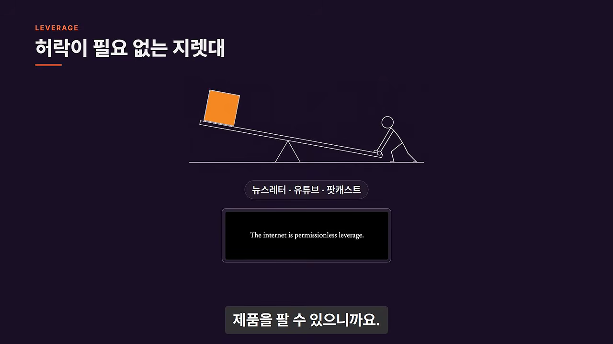
여기서 크리에이터는 인플루언서나 개인 브랜드가 아니라, 문제를 풀어 해결책을 제품이나 서비스로 만드는 사람이에요. 제임스 클리어가 뉴스레터와 책을 쓰는 것도 자기 필생의 작업을 더 많은 사람에게 보여 주는 방식일 뿐이라고 해요.
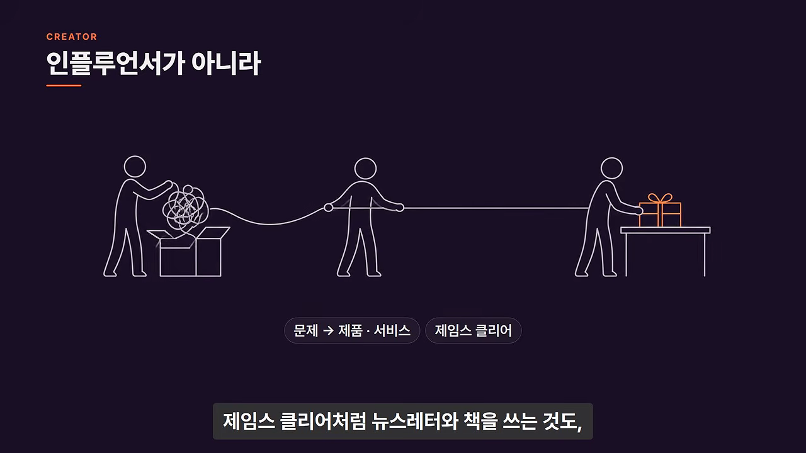
AI는 어디에 들어오나요
Dan Koe는 대부분이 AI를 슬롭 생성기나 새로운 검색 엔진으로만 안다고 해요. 실제로는 소프트웨어, 랜딩 페이지, 퍼널, 앱, 도구를 만들어 달라고 할 수 있어요. 그래서 Claude에서 코드 탭을 열고 할 일 앱을 만들어 보라고 권해요. 이름이 무서워 보여도 그냥 채팅창이라는 거예요.
- "할 일 앱을 같이 만들려면 어떻게 하면 좋을까?"라고 물어요.
- "가장 좋은 방법이 뭐야?"라고 물으며 결정은 내가 내려요.
- 모르는 걸 했으면 방금 뭘 했는지 가르쳐 달라고 해요.
이렇게 하루 이틀 사흘 하면 꽤 그럴듯한 앱이 나오고 감이 온다고 해요.
슬롭이 나오는 건 첫 시도에서 멈추기 때문이에요
"그래도 결국 AI 슬롭 아니냐"는 반론에는 "맞다"고 해요. 대부분이 거기서 멈추기 때문이에요. 반복이 있다는 걸 모르는 거예요. 첫 결과물은 AI가 있든 없든 형편없어요. 모바일 앱은 어느 때보다 많아졌지만 사용량은 그대로라는 예도 들어요.
GTA 6를 만드는 회사 CEO의 팟캐스트 발언도 인용해요. Dan Koe 스스로도 "CEO였던 것 같다"며 확신하지 못해요. 10년 전에도 누구나 마음만 먹으면 게임을 만들 수 있었지만 대부분 만들지 않았고, 만들었어도 히트하지 못했을 거라는 내용이에요. 비슷한 걸 만들어도 유통이 따라오지 않고, 그만한 회사와 프로젝트를 꾸릴 줄도 알아야 해요. AI는 거대한 지렛대일 뿐이고, 사업에 딸린 나머지 일은 여전히 직접 배우고 해야 해요.
시작하는 순서 세 가지
원래 영상에서 Dan Koe는 슬롭도 결국 누군가 내놓기로 고른 것이라고 말해요. 내레이터는 이를 '결과물 수준 = 사람 수준'으로 정리해요.
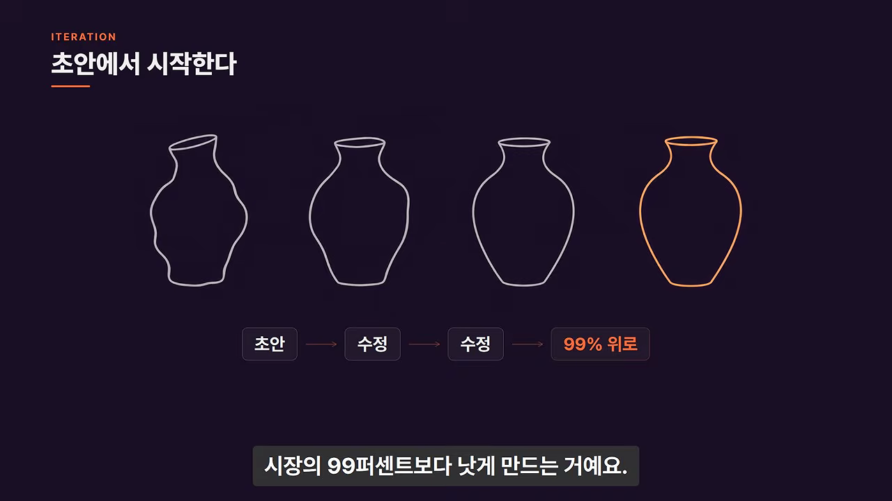
대부분은 그만큼 버티며 반복하지 않아요. Dan Koe는 이걸 하이 에이전시가 없다고 표현해요. 어떻게 하면 되는지 계획이 분명해질 때까지 계속 물어보고, 내가 고르고 통제한 비전을 AI가 실행하게 하고, 쓸 만해질 때까지 반복하는 거예요.
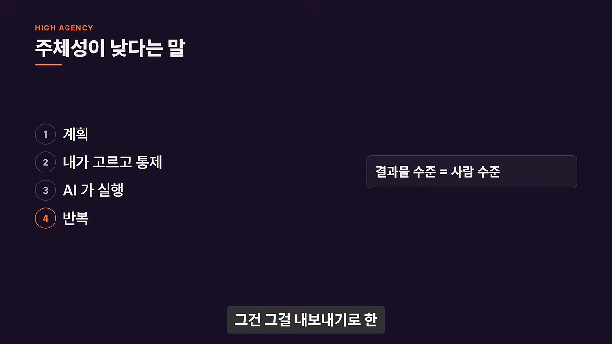
AI로 무엇이든 시작하는 세 단계
| 순서 | 원래 표현 | 무슨 뜻인가요 |
|---|---|---|
| 첫째 | Know what you want and what good looks like | 원하는 것과 좋은 결과의 모습을 알아야 해요. 마케팅, 제품, 세일즈, 유통은 여전히 필요해요. 뭘 할지 모르면 시킬 수도 없으니, 처음엔 AI를 맞춤형 학습 도구로 써요 |
| 둘째 | Have absurdly high standards | 터무니없이 높은 기준을 가져요. AI 결과물이 슬롭인 건 첫 초안을 최종본으로 취급해서예요 |
| 셋째 | Try to replace yourself with AI | 내 일을 AI로 대체해 봐요. 무엇이 되고 무엇이 아직 안 되는지 빨리 알게 돼요 |
셋째, 나를 AI로 대체해 보기
안 되는 걸 계속 자동화하려 들면 뒤처져요. 되는 것과 안 되는 것을 알고 나면, 사업과 내 그릇 가운데 어느 부분을 AI에 맡길지 고를 수 있어요. Dan Koe 자신의 구분은 이래요.
| AI에 맡기는 것 | 직접 하는 것 |
|---|---|
| 랜딩 페이지와 퍼널 만들기. 직접 만들어 봐서 좋은 게 뭔지 알기 때문에 첫 초안을 거기까지 이끌 수 있어요 | 뉴스레터, 게시물, 대본 쓰기. 쓰는 과정 자체를 좋아해요 |
| 많은 정보를 훑어 패턴과 트렌드를 찾는 리서치. 잘되는 콘텐츠를 손으로 찾는 건 이제 큰 손해라고 봐요 | 글의 가치는 독자 눈에 보이는 데 있어서, 전달하는 가치를 세밀하게 통제하려고 직접 써요. 코드는 사용자가 보지 않으니 사정이 달라요 |
어디서 시작할지 모르겠다면 하루 동안 하는 일을 시간대별로 전부 적어 보래요. 그 목록을 AI에게 주고, 무엇을 프롬프트나 스킬, 도구, 소프트웨어로 반복 가능하게 만들 수 있는지 물어보면 몇 가지 선택지를 줘요.
그렇게 만든 자동화도 첫 초안이라 처음엔 쓸모없어 보여요. AI를 디지털 직원으로 대하지 않아서 그래요. 새 직원을 뽑으면 사업의 모든 걸 저절로 알지 못하니 하나하나 가르쳐야 하잖아요. 프롬프트 한 줄이나 AI의 짐작으로는 거기까지 못 가요. 주고받으며 다듬어야 반복 가능한 과정이 생겨요.
내레이터의 정리
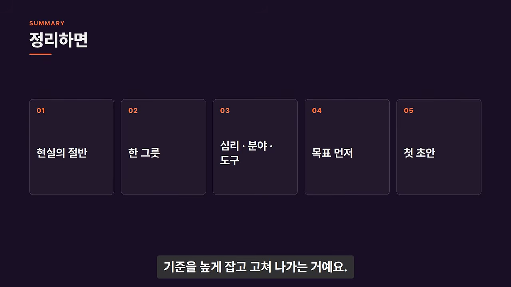
전부 거부하는 것도 전부 맡기는 것도 현실의 절반을 버리는 일이에요. 관심사는 한 그릇에 담고, 심리·분야·도구 가운데 도구에는 정체성을 두지 않아요. 배움은 목표를 먼저 세우고, AI는 첫 초안을 주는 도구이니 기준을 높게 잡고 고쳐 나가요. 마지막으로 내레이터는 지난 200년 동안 우리가 이미 기계처럼 살도록 훈련받았다는 점을 되짚으며, 관심사가 여러 개라면 지금이 가장 좋은 시기라는 원래 영상 제목의 말로 끝내요.